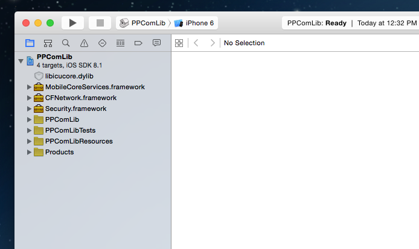
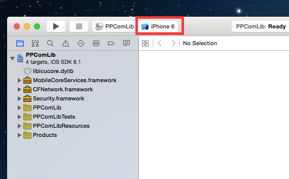
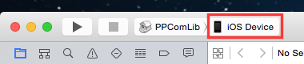
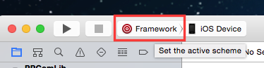
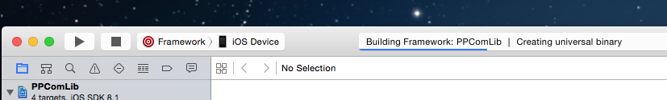
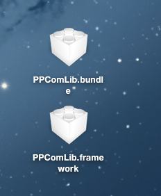

注意：此步骤成功执行之后，将会在桌面上生成最终供开发者下载与使用的两个文件：PPComLib.framework 和 PPComLib.bundle 。如果桌面上已经存在，需要提前删除掉才能正确生成（第三方开发者只需要下载这两个文件即可）。
双击 PPComLib.xcodeproj ，使用 Xcode 打开之后将会如下图所示：
点击下图红框标注的地方，更换 devices
切换 devices 为 iOS Device
修改 iOS Device 左边的 Scheme 为 Framework
按下 Command + B 进行编译，编译成功之后，将会在桌面上生成两个文件：PPComLib.bundle 和 PPComLib.framework. (编译之前可以使用 Command + Shift + K Clean 一下) ，正在编译：
编译成功 (你的桌面上将会出现这两个文件)：
